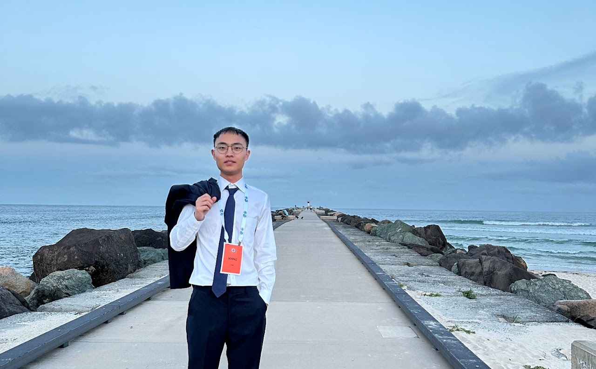
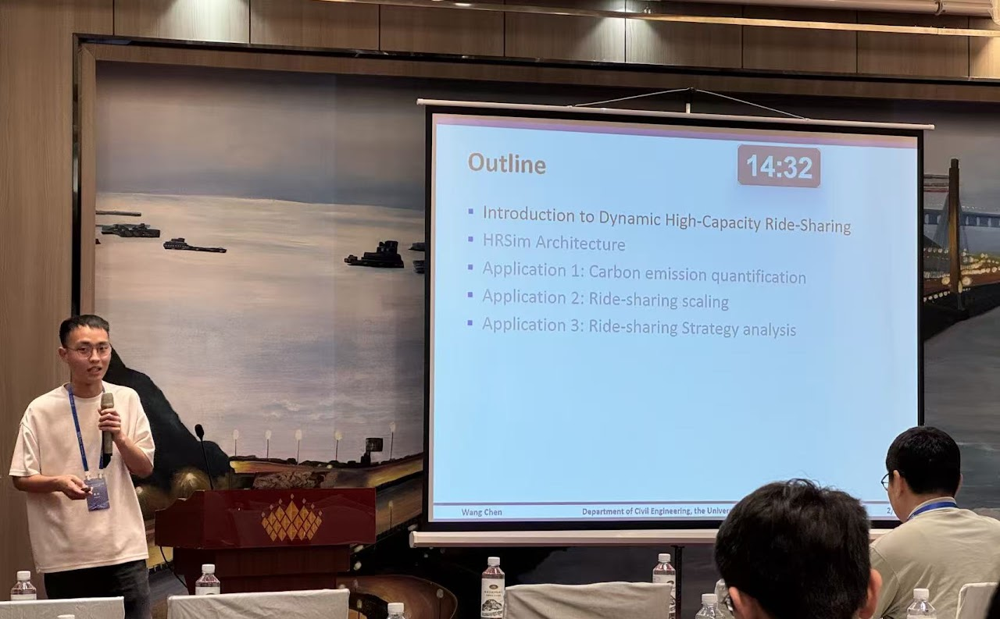
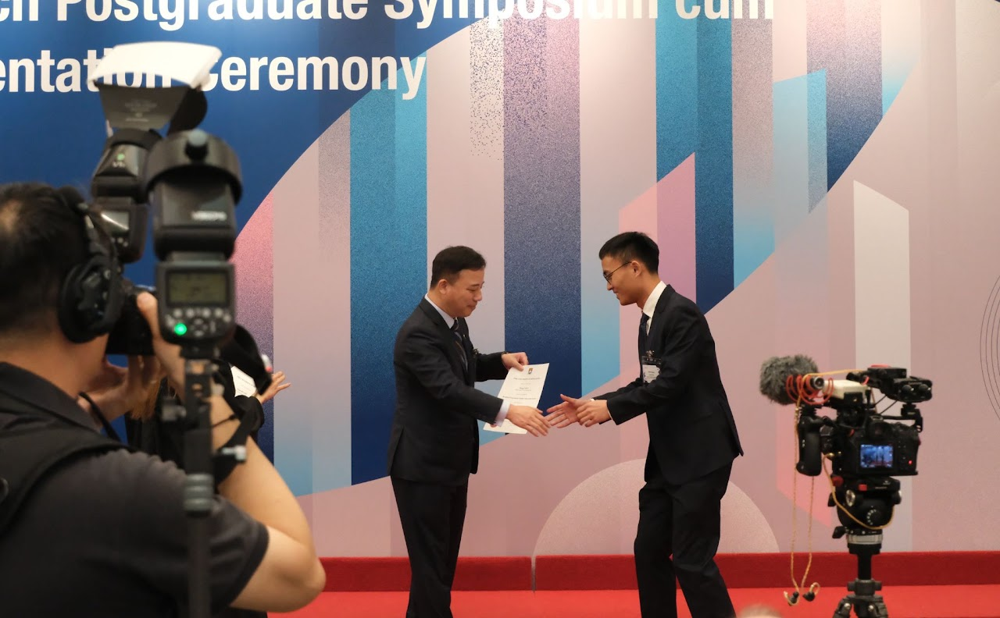
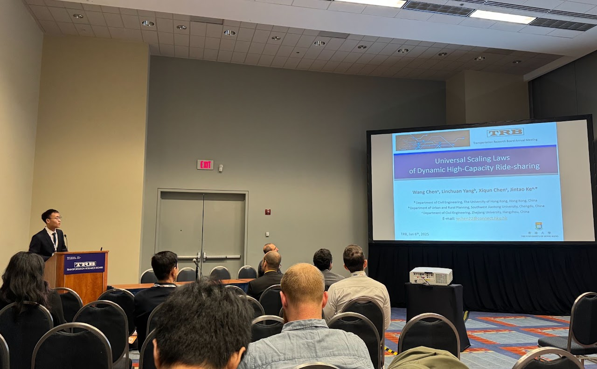
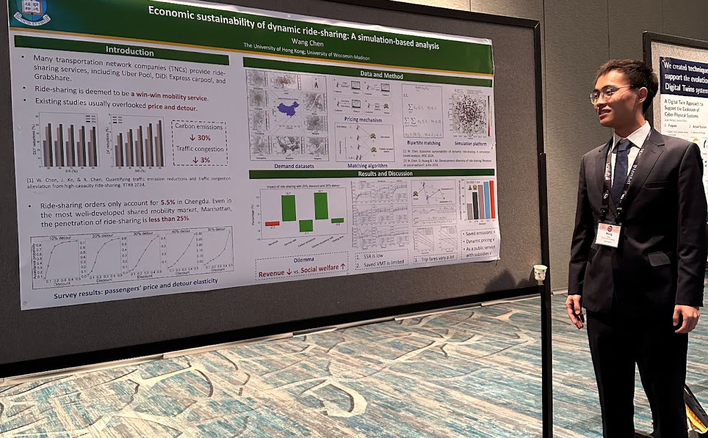
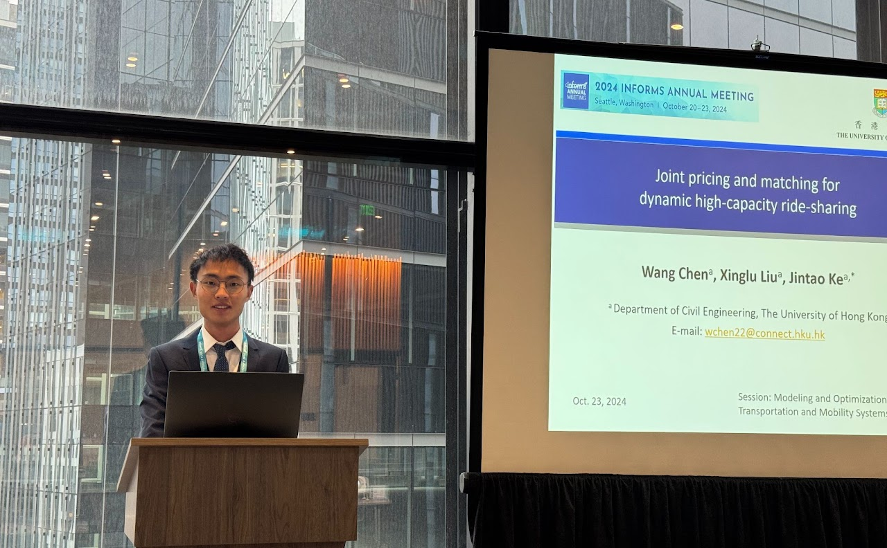
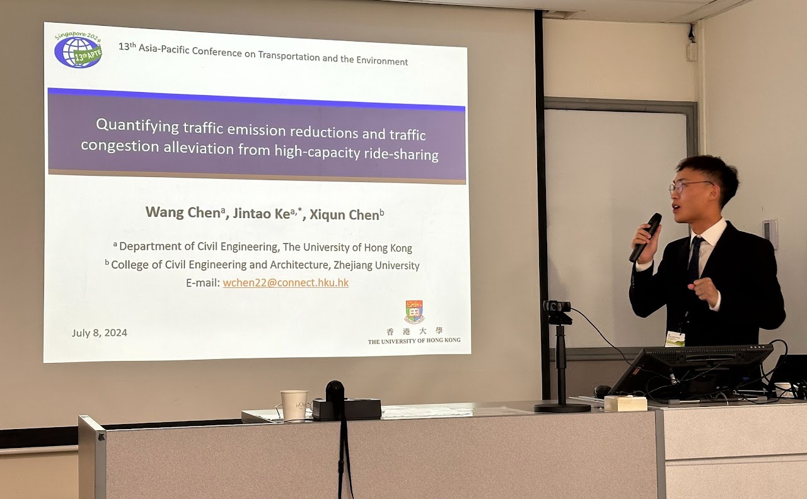
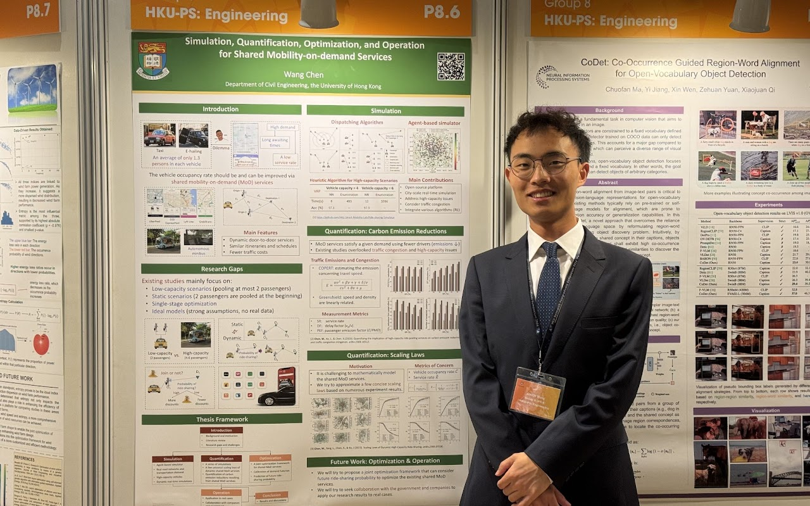
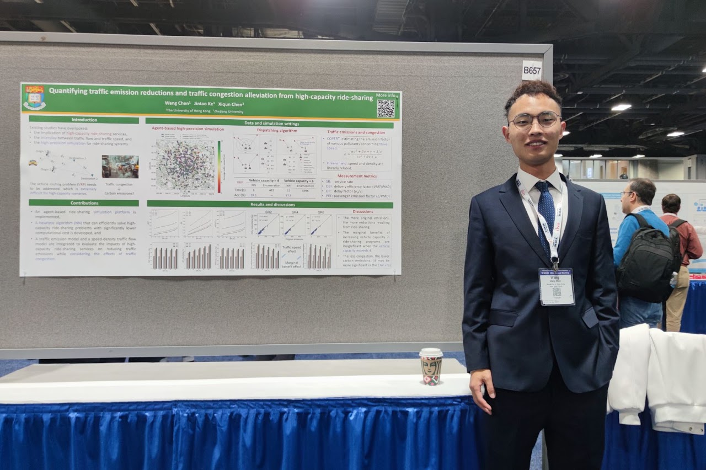
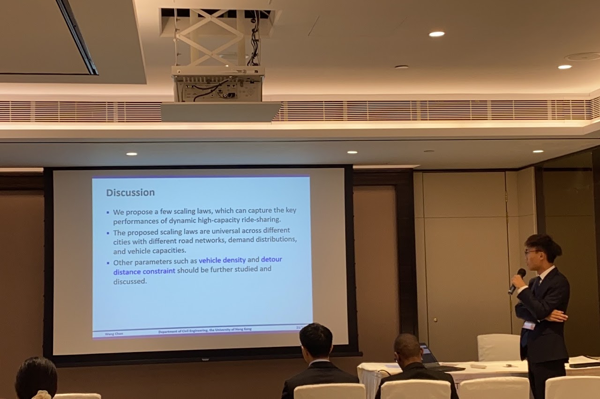

HRSim: An agent-based simulation platform for high-capacity ride-sharing services
Presented in the 28th IEEE International Conference on Intelligent Transportation Systems (IEEE ITSC 2025), Gold Coast, Australia, November 18−22, 2025.

Presented in the 28th IEEE International Conference on Intelligent Transportation Systems (IEEE ITSC 2025), Gold Coast, Australia, November 18−22, 2025.

Presented in the 16th International Workshop on Computational Transportation Science (CTS), Wuhan, China, July 26−27, 2025.

Presented in HKU Research Postgraduate Symposium, Hong Kong, China, March 20, 2025.
HKU Research Postgraduate Student Innovation Award (Up to 10 annual awards at HKU)

Presented in the 104th Annual Meeting of Transportation Research Board (TRB2025), Washington DC, United States, January 05−09, 2025.

Presented in the 2024 Winter Simulation Conference (WSC), Orlando, United States, December 15−19, 2024.

Presented in the 2024 INFORMS Annual Meeting, Seattle, United States, October 20−23, 2024.

Presented in the 13th Asia-Pacific Conference on Transportation and the Environment (APTE), Singapore, July 8-10, 2024.

Presented in HKU Research Postgraduate Symposium, Hong Kong, China, March 4, 2024.
Best Poster Presenter Award

Presented in the 103rd Annual Meeting of Transportation Research Board (TRB), Washington DC, United States, January 7−11, 2024.

Presented in the 27th Hong Kong Society for Transportation Studies (HKSTS) Annual Meetings, Hong Kong, China, December 12−13, 2023.